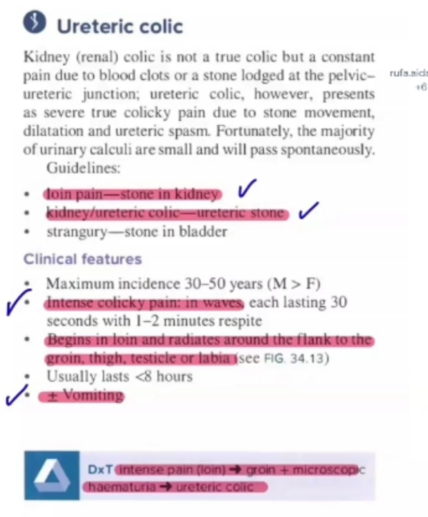
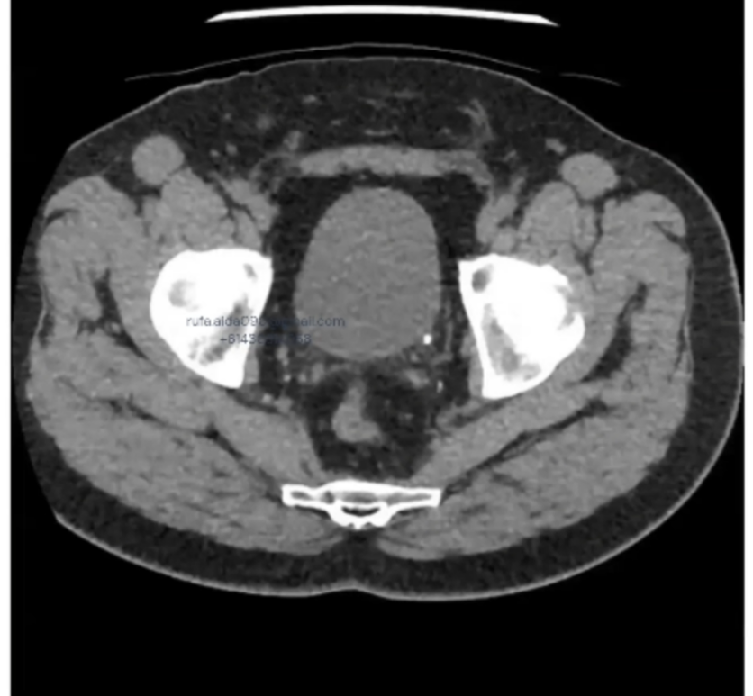
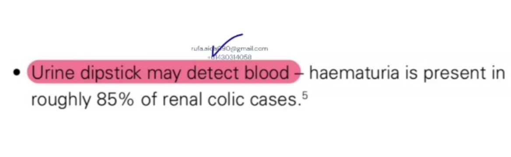
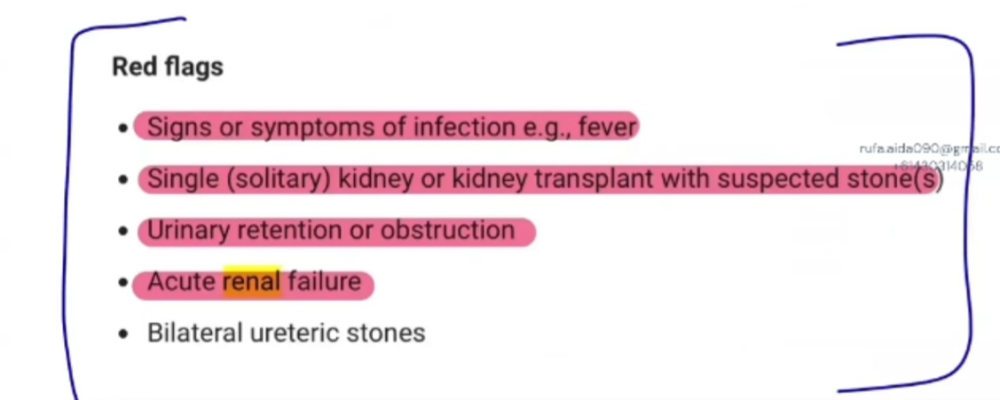
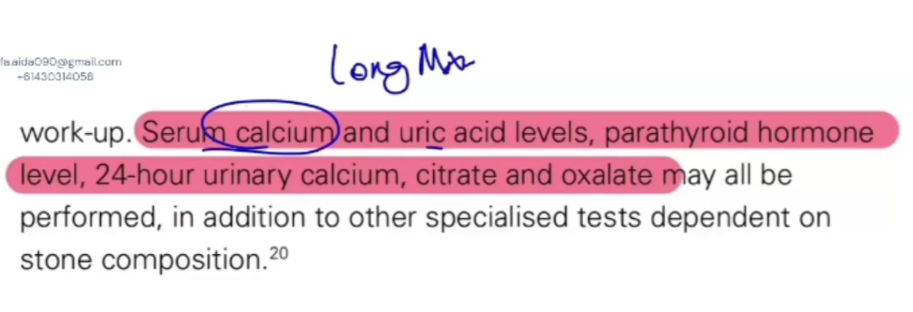
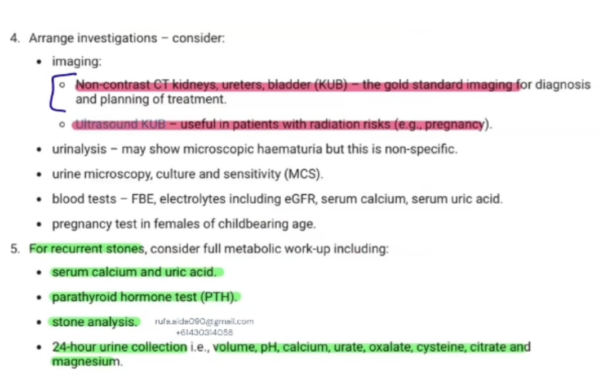
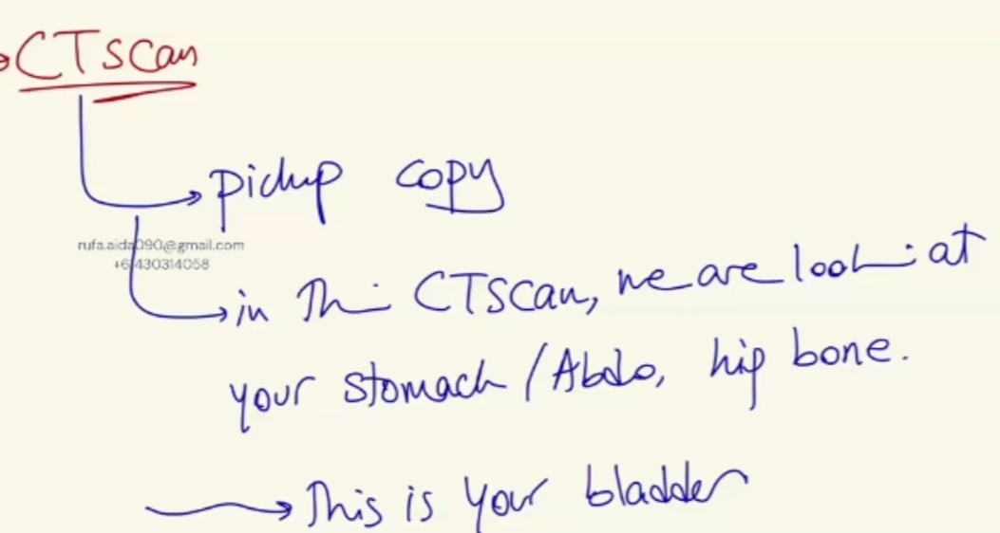
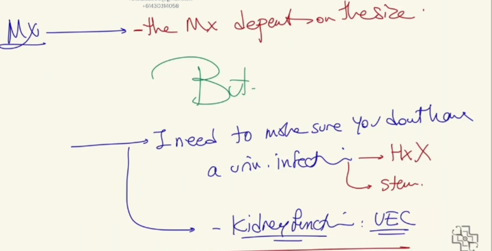
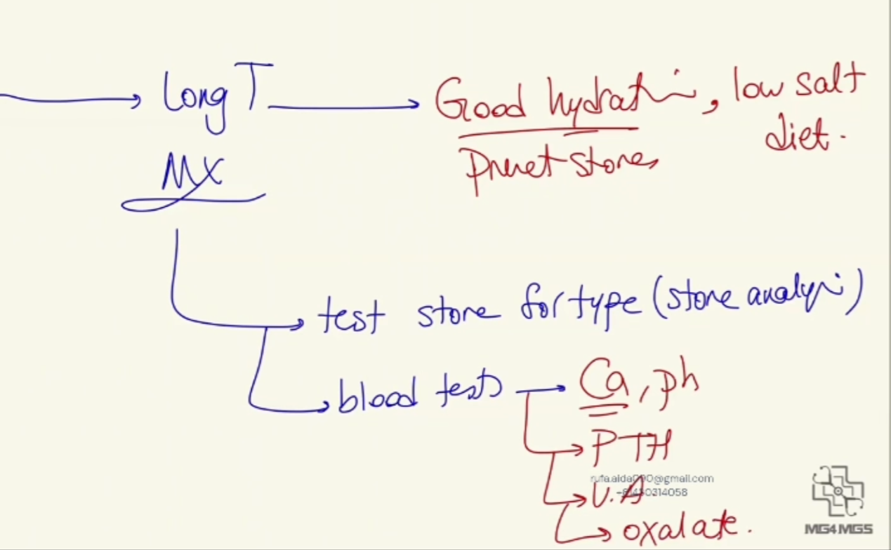

Source: Dr. Amir workshop — GIT 2026 / Class 8 ureteric case (Aug 2026 drop) · Specialty: urology
While the stone is in your kidney, you have loin pain. When it comes down, the pain starts dragging down towards your groin.
Although a plain X-ray and ultrasound can be done, non-contrast CT KUB is the gold standard. Urine microscopy and culture, looking for infection, is essential.
Murtagh: if the stone is small (up to about 5 mm) it will usually pass; if larger than 5 mm there is a chance it will not pass and intervention may be needed. If the patient passes the stone, they should retrieve it and present it for analysis.
Strain the urine: "I want you to strain your urine. If you're passing a stone, I want you to catch it and bring it in for analysis." Finding a calcium oxalate versus a uric acid stone makes a big difference to long-term management.
CT appearance: anything calcified is very bright ('shiny') on CT. A stone just leaving the kidney, one in the mid-ureter, or one sitting at the vesico-ureteric junction (VUJ) just before entering the bladder can all be identified. Remember a 3-4 mm stone appears very small - not a huge bright circle.
Urine dipstick: in renal colic you typically have blood - usually microscopic haematuria (often just 1-2+ blood), sometimes macroscopic - because the stone abrades the ureteric wall as it moves. Dipstick may also reveal nitrites, and urine microscopy/culture may confirm a urinary tract infection. This is a vital differentiator that significantly alters management.
If asked to manage renal colic in the emergency department or general practice, do not lead with painkillers - always first ask: does this patient have a UTI?
Why it matters: an obstructing stone + UTI leads to urosepsis: rapid pus accumulation (pyonephrosis), clinical deterioration, and poor response to antibiotics unless the obstruction is relieved.
Fever in renal colic = RED FLAG - think infection + obstruction - this is an emergency.
Guideline note (from the source's quoted reference, OCR restored): an obstructed infected system can result in catastrophic gram-negative sepsis, often requiring intensive care admission and occasionally causing death. Early recognition is key, hence the necessity of urine dipstick analysis in ALL patients with suspected renal colic. Occasionally the dipstick is negative because of complete obstruction of infected urine - so in any patient with fever, tachycardia or hypotension, infection must still be considered. Patients with minimal renal reserve (pre-existing kidney disease) should also be sent to hospital for treatment.
Gold standard: non-contrast CT KUB - most sensitive and specific; detects stone size, location and obstruction.
Other options:
Special case - pregnancy: avoid radiation (no CT or X-ray); use ultrasound. Diagnosis may be difficult due to anatomical displacement in late pregnancy. Always do a pregnancy test in females of childbearing age.
Order urea, electrolytes and creatinine (UEC) to detect renal impairment - severe renal impairment may require urgent intervention instead of conservative management. Also consider FBE, eGFR, serum calcium and serum uric acid.
These patients must NOT be managed conservatively:
Clinical rule: red flag present = urgent urology referral + decompression - NOT "go home and wait".
Initial priorities: exclude infection (urine dipstick +/- culture) and check renal function (UEC).
Indication for conservative management: stone approximately 5-7 mm or smaller (likely to pass).
Ask the patient to pass urine into a container and strain it through a sieve to catch the stone. Purpose: confirms passage (avoids repeat imaging) and allows stone analysis, which guides prevention strategies.
Safety netting - give clear return instructions. Return immediately (arrange emergency assessment) if:
Follow-up schedule:
Refer to urology. Options:
"You have a condition called ureteric colic. That means you have a kidney stone that you are passing, and because of the pressure on the wall of the tubes, it causes the pain you are having. We've done the CT scan and I can see the stone, but your symptoms were also suggestive:
"The management depends on the size of the stone. But before we decide on treatment, the most important thing is to make sure you don't have an infection along with the stone. So I'll do a urine test - a dipstick, and send it for culture - because an infection with a stone can become serious quickly. I'll also do a blood test to check your kidney function - urea, electrolytes and creatinine - which helps guide how we manage you safely. I'll also quickly ask if you've ever had kidney problems or surgeries, or if you have only one kidney."
If the stone is small (less than about 5-7 mm) - good chance it will pass on its own, so we treat conservatively:
When to come back immediately: "You develop a fever; the pain is not improving; or you're unable to pass urine - these could be signs of complications." Also: "I'd like you to strain your urine to catch the stone when it passes so we can analyse what type it is. I'll review you again in about 2-3 days."
If the stone is larger than about 5-7 mm - less likely to pass on its own; refer to a urologist. Options to explain: laser lithotripsy (break the stone into smaller pieces so you can pass it); percutaneous nephrolithotomy (surgery by the urologist if the stone is higher in the ureter); shock wave lithotripsy - ESWL (sound waves from outside the body); or retrograde ureteroscopic stone removal ("we insert a small telescope through the water passage, grab the stone, crush it and remove it - since your stone is very close to the bladder").
"Overall this is a common condition, and most stones - especially smaller ones - pass on their own with the help of medications. We'll keep a close eye on you and make sure you're safe throughout. Do you have any questions or concerns?"
Long-term: "Once this stone is treated we'll focus on preventing future stones: good hydration (urine light in colour), a low-salt diet, stone analysis if you catch it, blood tests for calcium, uric acid and a hormone called PTH, and urine checks for things like pH and oxalate - this helps us understand why the stone formed and reduce the chance of it happening again."









Reviewed by: surgical-skills-expert (Australian surgical educator, FRACS) · fact-checked against the irStudy medical textbook RAG index.